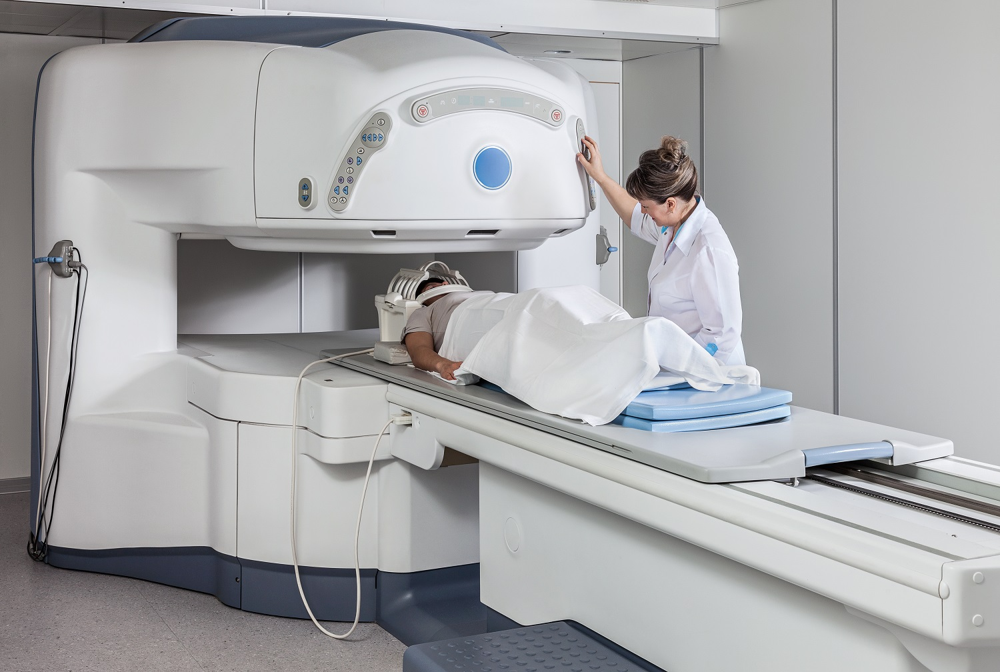
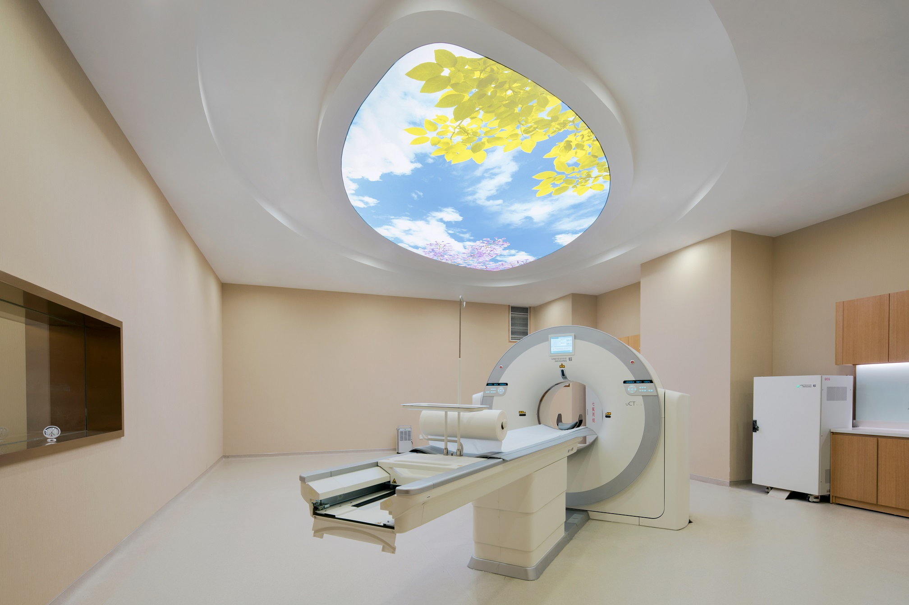
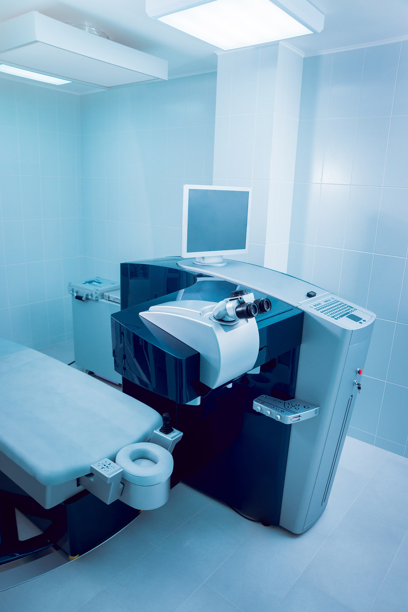

精密体检
人类在健康的状态下，对以早期发现身体异常为目的的检查被称作精密体检。根据检查医院的体检项目，
检查类型一般可分为100种以上。如可从癌症检查方面入手进行各种各样的检查，使得一些难以发现的疾病
通过精密体检能够及早的发现并进行治疗。
PET检查
脑部精密检查
妇科检查
检查类型一般可分为100种以上。如可从癌症检查方面入手进行各种各样的检查，使得一些难以发现的疾病
通过精密体检能够及早的发现并进行治疗。
PET检查
PET是最先进的癌症检查和筛选的影像医学，较CT和MRI检查更精密。PET检查可以帮助发现非常细微的癌细胞，
做到及时的癌症早期发现和治疗。 目前，通过CT和MRI检查只能发现癌的形状，而PET检查却可以发现癌症的
［活动状态］。由于癌细胞通常被正常细胞3至8倍的葡萄糖所吸收，PET检查则利用这个特质，
检查时使用的检查药剂（称为FDG）是类似于人体内的葡萄糖物质。通过观察它的反应，能够及时发现癌症。
另外，从影像上也可以看到［对FDG检查药剂的不同反应］从而推测恶性肿瘤聚集的地方，并检查肿瘤的恶性程度。
做到及时的癌症早期发现和治疗。 目前，通过CT和MRI检查只能发现癌的形状，而PET检查却可以发现癌症的
［活动状态］。由于癌细胞通常被正常细胞3至8倍的葡萄糖所吸收，PET检查则利用这个特质，
检查时使用的检查药剂（称为FDG）是类似于人体内的葡萄糖物质。通过观察它的反应，能够及时发现癌症。
另外，从影像上也可以看到［对FDG检查药剂的不同反应］从而推测恶性肿瘤聚集的地方，并检查肿瘤的恶性程度。

脑部精密检查

体检脑部的精密体检是帮助检查脑部健康状态，预防脑部疾病的检查。通过脑部的精密体检，可以判断脑梗塞、脑出血、
脑瘀血等脑部危险性疾病。第一次接受检查时，我们推荐［头部MRI与头部、颈部MRA］的套餐。
脑瘀血是指非外伤性脑实质内出血，又称出血性脑卒中，是死亡率和致残率较高的一种常见病。通过MRI/MRA脑精密体检，
可以检查基本的脑部疾病，帮助预防脑淤血及脑梗塞等。
脑瘀血等脑部危险性疾病。第一次接受检查时，我们推荐［头部MRI与头部、颈部MRA］的套餐。
脑瘀血是指非外伤性脑实质内出血，又称出血性脑卒中，是死亡率和致残率较高的一种常见病。通过MRI/MRA脑精密体检，
可以检查基本的脑部疾病，帮助预防脑淤血及脑梗塞等。
妇科检查
近年来，女性患癌概率大大增加，我们建议女性定期接受妇科体检。女士精密体检，是在通常的综合体检基础上
加上针对女性特有疾病（乳腺癌、子宫颈癌，卵巢癌、子宫内膜症等）的项目进行检查。乳腺癌检查包括了从问诊、
视触诊、乳房摄影术、超声波检查等方面。并且，我们将为您提供专为女性顾客提供的医疗设施和女性医生进行检查。
加上针对女性特有疾病（乳腺癌、子宫颈癌，卵巢癌、子宫内膜症等）的项目进行检查。乳腺癌检查包括了从问诊、
视触诊、乳房摄影术、超声波检查等方面。并且，我们将为您提供专为女性顾客提供的医疗设施和女性医生进行检查。
